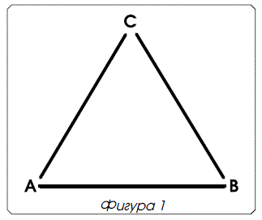

Беседа 591 от 3877 · Беинса Дуно
Педагогическа лекция
Fir-für-fen
Tau-bi-aumen
Размишление
Чете се темата "Ползата от реките, моретата и океаните".
За следния път пишете върху темата: Произход на огъня.
Като ученици вие не спазвате най-елементарното правило, а именно: каквото чуете в класа, да не го изнасяте навън, докато не го обработите, докато не стане ваше. В това отношение вие издишате, както издиша пукната стомна или пукнатата реторта на химика. Какво ще стане с водата, която наливате в пукната стомна? Ще изтече навън. Какво ще стане с опита на химика, който е турил известни елементи в пукната реторта? Ако никаква експлозия не стане, най-малко опитът ще излезе несполучлив. Когато градинарят сее семена в градината си, той ги заравя отгоре с пръст и не ги пипа, докато не израснат. Никой не знае какви семена е посял и къде ги е посял. Достатъчно е едно дете да знае това, за да изрови семената от земята и да ги унищожи. Следователно, когато Учителят посажда семена в ума и сърцето на ученика си, последният трябва грижливо да ги пази, да не би деца да дойдат отвън и да ги изровят. Изровят ли семената му, ученикът ще се усъмни в Учителя си, ще изгуби доверието си в него.
И тъй, пазете следното правило: не се съмнявайте в Бога, не се съмнявайте в Учителя си! Който се съмнява в Учителя си, той не е ученик. Най-страшното нещо за ученика е да се усъмни в Учителя си. Щом се усъмни в Бога, в Учителя си, всичко с него е свършено. Ако не познавате Учителя си, защо отивате при Него да се учите? Щом отидете да се учите при някой Учител, вие непременно трябва да му вярвате. Досега в аналите на окултната история няма нито едно изключение, когато ученик да се е усъмнил в Учителя си, и да не е пострадал. Ако законът е строг към ученика, още по-строг ще бъде към Учителя: ако Учителят престъпи най-малкия Божествен закон, и с Него всичко е свършено. Строг е Божественият закон. Невъзможно е ученик да бъде поставен на място, което не заслужава – мястото на всеки ученик е строго определено. В Божествения свят мястото на ученика е строго определена величина, която не се мени. Ако учениците се съмняват в Учителя си, този учител живее в света на сенките, а не в Реалността. Много такива учители има в света, но тези учители ограбват учениците си и нищо не им дават.
Един такъв учител отишъл във Франция между аристократите и започнал да им говори за окултната наука, за силите, които се крият в нея. Един ден той решил да покаже на учениците си на практика силата на окултния ученик. Той им казал, че за опита, който ще направи, е нужно злато и скъпоценни камъни. Аристократите веднага се отзовали в услуга на своя учител: донесли му скъпоценни огърлици, пръстени с хубави диаманти. Опитът се заключавал в следното: учителят ще вземе със себе си скъпоценните камъни и златото и със силата на мисълта си ще използва силата на скъпоценните камъни и златото и когато експресът минава, ще го спре. Всички аристократи излезли в определения ден на гарата, когато експресът минавал, за да видят как учителят им ще прояви силата си. Като минал експресът, учителят успял да се хвърли в него и изчезнал заедно с него. Учениците му обаче никога повече не го видели – заедно със скъпоценните камъни и огърлици и учителят изчезнал. Това не е учител, нито учителстване.
Не е учител този, който дава само физически знания на учениците си. Ученикът сам може да добие физически знания. Как? Чрез опити. Ако иска да рисува, ученикът ще вземе платно, четки, бои и ще започне да се упражнява. Като се упражнява известно време, той ще придобие изкуството да рисува. Истински Учител е онзи, който дава знания на учениците си и за трите свята – физически, Духовен и Божествен. Художеството спада към физическия свят, защото четките, боите, платното, картината могат да се видят, да се пипат. Когато ученикът е работил дълго време в областта на художеството, най-после той се отегчава от него, иска да мине в друга област, в друг свят. Понеже знае да свири на цигулка, той взема цигулката и почва да свири, да се упражнява. В случая цигулката може да се пипа, звукът ѝ обаче се чува, но не може да се пипа. Значи в музиката вече се явява един духовен елемент, вследствие на което тя има отношение към Духовния свят, към областта на чувствата. След като свири известно време, ученикът има желание да промени работата си, да влезе в друг свят – в света на съзерцанието, на уединението, на молитвата. Чрез молитвата той навлиза в Божествения свят. Молитвата нито се пипа, нито се чува, за молитвата може само да се мисли. Като прекара известно време в молитвено състояние, ученикът отново се заема с някаква работа на физическия свят. После минава пак в Духовния и в Божествения свят. За да не се отегчи в работата си, ученикът трябва често да я сменя, да минава от физическа в духовна, от духовна – в Божествена. Той не трябва дълго време да се задържа на една и съща работа. Кое пречи на ученика, като работи физически, едновременно с това да чувства и да мисли?
И тъй, за да не се съмнявате в Учителя си, първо трябва да го опитате на физическия свят, после – в Духовния и най-после – в Божествения. Щом го изпитате в трите свята, тогава идете при него да се учите. Учителят трябва да има три дипломи, от които да се вижда, че е свършил университет или поне гимназия на физическия свят, той трябва да е свършил прогимназия в Духовния свят и основно училище или забавачница в Божествения свят – истинският Учител непременно трябва да има тези три дипломи. Ако и при това положение ученикът се съмнява в Учителя си, грешката е в самия него. Този ученик е взел крива насока на мисълта си и каквото и да чуе от Учителя си, няма да се ползва. За да се освободи от съмнението, ученикът трябва да се научи да тълкува, да превежда нещата. Преводът трябва да бъде трояк – от физическо гледище, от духовно гледище и от Божествено гледище. Когато прави сполучливи преводи, ученикът никога не може да се съмнява в Учителя си. Щом не се съмнява, той ще се развива правилно.
Сега аз искам да ви освободя от заблужденията, в които често изпадате. Разсъждавайте добре, за да се освободите от заблужденията си и да не страдате. Срещате един ваш познат, който минава покрай вас и не ви поглежда; казвате: "Защо този човек е свил толкова веждите и очите си, какво иска да каже с това, защо се сърди?" За да разберете причината за поведението на вашия познат, преди всичко вие трябва да помислите малко върху произхода на веждите. Оттам пък ще си обясните кога човек свива очите и веждите си. Когато гледа право в Слънцето, човек инстинктивно затваря малко очите си, свива веждите си, за да може по този начин да регулира светлината. Значи със свиването на очите и веждите си човек приема по-малко светлина. Слънчевата светлина е силна и когато човек гледа право в Слънцето, окото така се приспособява, че приема по-малко светлина. Оттук можем да извадим заключение, че веждите са създадени за предпазване на очите от голяма светлина, от силни външни впечатления. Човек свива веждите и очите си, когато преживява нещо силно, някакво голямо нещастие или голяма изненада. Значи човек свива веждите и очите си при големи мъчнотии в Живота. Той върви, свил вежди и очи, никого не вижда, а вие казвате, че специално вас не иска да види. Не, това е криво заключение. Този човек ни най-малко не е недоволен от вас, друга е причината, задето той свива веждите и очите си.
Следователно като ученици вие трябва да изучавате движенията, да знаете техния първичен произход. Като наблюдавате хората, ще видите, че едни от тях свиват едната или другата вежда, едното или другото око. Други пък правят различни движения на устата, като изкривяват някога дясната страна, друг път лявата. После ще забележите, че някога долната устна на човека увисва, а някога става повдигане на горната устна. Като изучавате тия движения, ще видите, че всяко движение отговаря на мислите и чувствата, които занимават човека в даден случай. С движенията на устните си човек изразява презрение, радост, скръб, доволство, недоволство, обезсърчение и т.н. Когато кажат на някого, че няма да успее в работите си, веднага долната му устна увисва. Щом се насърчи, усмихва се и долната му устна се повдига малко. Изобщо всички движения в човека са свързани с неговия вътрешен живот. Както явленията в Природата имат свое обяснение, така и движенията на човека имат своя причина, свой далечен произход. Ако малките задачи не можете да решавате, как ще решавате големите? Изпитите, които учениците минават, не са нищо друго освен проверка на знанията им. Учителят може да даде на учениците си задачи от събиране, изваждане, умножение и деление, той може да им даде задача от просто тройно правило и сложно тройно правило или да решават уравнения с едно и няколко неизвестни; най-после той може да им даде задачи от висша математика. Каквито и задачи да решават учениците, това са задачи, които имат отношение към Реалния живот, към живота на Истината. Когато говорите Истината, вие трябва да я изнасяте така, както математикът решава задачите – точно, последователно, без никакво изопачаване на данните, на дадените величини. Затова от ученика се изисква чист, неизопачен ум. Ученикът може да изнесе Истината каквато е в действителност, само ако я обича. Няма по-велико нещо за човека от това да обича Истината.
Защо трябва да обичате Истината? Казано е в Писанието: "Истината ще ви направи свободни." Щом имате нужната Свобода, вие ще можете да учите, да придобивате знания. Истинското Знание почива на точно определени данни. Там няма никакъв фалш, в Знанието няма никакво подозрение. Подозрението показва невежеството на човека, подозрението показва още, че в ума, сърцето и волята на човека има нещо болезнено. И наистина, докато стомахът на човека е здрав, човек е господар на стомаха си; щом стомахът се разстрои, той става господар на човека, той му заповядва да яде или да не яде. Той казва на човека: "Днес няма да ядеш нищо!" Домашните му започват да го увещават: "Хапни си поне малко варено житце." – "Не, стомахът ми заповядва нищо да не ям." Ако кракът ви е здрав, вие ще му заповядвате; ако е болен, той ще ви заповядва. От крака ви зависи можете ли да отидете на разходка или не можете. Ако мислите добре, вие ще заповядвате на ума си; ако не мислите добре, умът ще ви заповядва. Ако сте добри, вие ще заповядвате на сърцето си; ако не сте добри, сърцето ще ви заповядва.
Следователно, когато някой каже, че не признава никакъв учител, това показва, че той е болен човек. Докато умът слуша Духа, човек е здрав и може да учи. В който момент умът се откаже да слуша Духа, казваме, че човек е заболял. Духът в човека е Учителят, а умът – ученикът. Тъй щото, когато ученикът се откаже да слуша учителя си, той е заболял и трябва да се лекува. Щом умът на ученика заболее, едновременно с това заболяват сърцето и волята му и той започва да изопачава Истината, започва да си служи с неверни факти.
Обичайте Истината и не се съблазнявайте в малките работи. Чистото при всички условия е чисто, нечистото при всички условия е нечисто; Доброто при всички условия е Добро, злото при всички условия е зло; Истината при всички условия е Истина, лъжата при всички условия е лъжа. Това са неща, абсолютно определени. За да се докаже дали даден факт е абсолютно верен, той трябва да се изпита в трите свята – физическия, Духовния и Божествения. На същото основание, за да се каже, че едно качество или една характерна черта в човека е действителна, тя трябва да има признаци на три места – на главата, на лицето и на ръката. Ако този признак е на трите места, отношението е 3:3, значи това качество е абсолютно вярно. Ако признакът съществува на две места, а на третото отсъства, имате отношението 2:3; ако признакът е само на едно място, отношението е 1:3. В последните два случая нямате Абсолютна Истина, но относителна. Следователно, когато вадите заключение за известни факти, вие трябва да знаете какво е отношението между величините, които ги определят – дали е 3:3, 2:3, или 1:3. Ако от отношението 1:3 извадите същото заключение, каквото от 3:3, вие ще имате криво заключение. За да не вадите криви заключения, всяко явление трябва да се разглежда едновременно в трите свята. Ако това явление е станало и в трите свята така, както сте мислили, заключението ви за него ще бъде абсолютно вярно.
Често вие се произнасяте за хората, казвате, че някой човек е добър, а друг – лош. Някога сравнявате добри хора и казвате, че единият е по-добър от другия. Ако разбирате смисъла, който е вложен във всяка буква или във всяка дума, вие ще можете да четете по тях. Като напишете или изговорите думата добър, трябва да се спрете върху буквата д, с която започва думата добър. Тази буква означава узрял плод. Значи добрият човек съдържа в себе си един узрял плод. Кажете ли обаче по-добър, тук вече имате процес, работа – за да стане по-добър, човек трябва да работи. Казвате, че един човек е богат, а друг – по-богат. По-богатият е в процес на работа, а в богатия има нещо завършено, някакъв резултат. Това, което казах за добрия човек, е само теоретично знание. За вас е важно да познаете добрия човек на практика, да видите какво произвежда той върху вас. Истински добрият човек оказва влияние в три направления – върху тялото, върху сърцето и върху ума на човека. Ако добрият човек се приближава при някой болен, последният оздравява. Ако се приближи при човек, на когото сърцето е смутено, той веднага го успокоява, внася в сърцето му Мир; ако се приближи при човек, на когото умът е помрачен и не може право да мисли, той внася в ума му Светлина. Обаче, ако добрият човек действа само върху тялото на болния, той е една трета добър; ако действа върху тялото и сърцето на човека, той е две трети добър и най-после ако действа върху тялото, върху сърцето и върху ума на човека, той е три трети добър. Това е закон.
Приложете този закон и върху учителя си, за да познаете дали е добър или не. Ако с приближаването си към учителя си здравето ви се възстанови, сърцето ви се успокои и умът ви се просвети, той е истински добър, той е Учителят. Това е диагноза, това е окултна дефиниция за определяне качествата на добрия човек. В тази дефиниция няма никакво изключение. Всякога ли трябва да изпитвате въздействието на добрия човек? Изпитвайте го, за да видите, че той е като Слънцето. Както Слънцето дава своята светлина и топлина на всички и всякога, така и добрият човек всякога и към всички проявява своите качества. Колкото по-отворен е човек към него, толкова повече може да получи.
Какво знаят съвременните хора за Слънцето? Те казват, че Слънцето е светещо тяло, с висока температура, със сложен състав и се намира на голямо разстояние от Земята. Много неща знаят те за Слънцето, но едно не знаят: те не подозират даже, че това Слънце е отражение на Божественото слънце, т.е. на Божието око, което вижда всичко, подканя всички на работа – едни събужда, на други дава импулс за работа, трети призовава към Живот. На дървото казва: "Ти ще растеш нагоре, ще работиш усърдно." Щом получи тази заповед, този импулс, дървото започва да работи. Като срещне паяка, казва му: "Ти ще предеш своята паяжина." Като даде своите разпореждания, Слънцето започва да се изкачва нависоко, отдето следи кой как върши работата си. Когато се отегчат от работа, всички живи същества започват да търсят начини как да се скрият от Божието око – щом искат да се скрият от Бога, от Слънцето, веднага спущат облаците. Следователно облаците са пердета на мързеливите, на непослушните хора, които искат да скрият делата си от зоркото око на Великия. Той погледне оттук, погледне оттам – нищо не се вижда. Тогава изпраща вятъра да разкъса тия пердета. Като дойде вятърът, като задуха, зафучи, веднага вдига завесите и пита съществата, които са се скрили под тях: "Какво правите тука, защо се криете?"
Често и учениците правят същото: като се намерят пред някаква мъчнотия, която не искат да разрешат, спуснат едно перде пред себе си – никой да не вижда какво правят. Докато мислят, че никой не ги вижда, вятърът духне, разсее облака в съзнанието им, надникне вътре и каже: "Защо седите без работа, излезте всички вън! Каквото ви е заповядано, изпълнете го. Ако не свършите зададената работа, ще изсъхнете." Закон е: когато Божественото съзнание дойде в света, то не оставя живо същество без работа – дето намери същества, които живеят със заблуждението, че не могат да работят, че са в тъмнина, в безсилие и невежество, веднага изпраща вятъра на Живота, който в миг разпръсва облаците на заблужденията и казва: "Всички на работа!"
И тъй, ако искате да бъдете ученици, първото нещо, което се изисква от вас, е да имате Абсолютна вяра в Учителя си. Каквото и да прави Учителят, ученикът не трябва да се съмнява. Ако ученикът се усъмни в Учителя си, той ще се усъмни и в себе си. Учителят не е нищо друго, освен висшето, т.е. Божественото начало в ученика. Вие можете да заместите това начало и с друга величина, можете да го наречете Бог, Природа, свръхсъзнание и т.н. Каквото име дадете на това начало, вие не трябва да се съмнявате в него. Щом се усъмните, всичко изгубвате – и Бог, и Учител, и съзнание. Тогава Учителят става за вас някакъв външен субект, без смисъл, без значение. Това не е ученик, това не е ученичество. То е все едно да нарисувате като малкото дете една карикатура на дъската и да мислите, че сте нарисували някакъв паун. Никакъв паун не е това – драскулките на детето не са рисунки на художника. Съмненията и заблужденията на ученика не са идеи на ученичеството.
Следователно като ученици вие трябва да прилагате Истината в живота си. Кажете ли нещо невярно, то ще спре прогреса, развитието ви. Ученикът трябва да си служи с точно определени величини. Окултната наука не търпи двусмислени, неопределени величини. Там всичко е строго определено и на място. В който и свят да погледнете, навсякъде е така. Че съществуват илюзии, заблуждения, лъжи, двусмислености, това са човешки изобретения, резултат на отклонения от великия закон на Живота. Резултат на тия отклонения са болестите и противоречията: хората боледуват, защото са нарушили закона на Истината. Който иска да изправи живота си, да възстанови здравето си, той трябва да възлюби Истината. Той трябва да се стреми към нея, да я познае, да я обикне. Ако не прилага Истината, човек неизбежно ще прилага лъжата. Днес лъжата господства в света. Защо? Защото тя е полюс на Истината. Дето Истината отсъства, там лъжата присъства. Когато Адам сгреши, той се скри от лицето на Бога, тури си перде да не го види Бог. Господ го запита: "Адаме, къде си?" – "Тук съм, Господи, но съм гол, не мога да се покажа." Адам излъга Господа. Първоначално той не беше гол, но оголя след като сгреши, след като пристъпи Божията заповед. Той не призна грешката си, но си послужи с лъжата. Следователно, когато лъже, човек оголява. Такова е положението и на ученика, когато си служи с лъжата.
Това, което сега говоря, се отнася до учениците. Който е ученик, той трябва да говори Истината. На ученика не се позволява да лъже. Ако си послужи с най-малката лъжа, въпросът с него е свършен. Който не е ученик, той не е отговорен дали е казал една лъжа или не. Ученикът обаче по никой начин не трябва да си служи с лъжата. Няма по-велико нещо от това да бъдеш ученик! Красиво е името ученик! Сега и вие сте ученици, но само на физическия свят. Значи вие сте само една трета ученици. За да станете истински ученици, трябва да минете през ученичеството на Духовния свят, а оттам – през ученичеството на Божествения свят. Щом минете през ученичеството на трите свята, вие ставате ученици в абсолютния смисъл на думата. Значи вие трябва да минете от видимото, т.е. от физическия свят, към невидимото – към безграничния свят, към Бога. Вие не можете да разберете Божествения свят, докато не разберете физическия и Духовния.
И тъй, стремете се към Истината. Проверявайте фактите – щом се усъмните в нещо, проверете вярно ли е това нещо или не. Докато не дойдете до Истината, нищо не приемайте в себе си. Само Истината е в състояние да ви повдигне, да ви направи свободни. Каквото се случи в живота ви, използвайте го за каляване, спокойно приемайте нещата. Представете си, че сте ученик в някое училище и ви поставят на изпит всички ученици да се изредят пред вас и да ви заплюят. Какво ще бъде вашето положение? Ще се върнете дома си огорчен, обиден и втори път няма да се явите между съучениците си. Защо няма да отидете на училище? Защото ви оплюли. Вярно ли е, че са ви оплюли? Представете си, че имам един голям, добре излъскан диамант; нося диаманта на себе си и се радвам, разговарям се с него; той има съзнание за своя блясък, разбира, че е ценен. На пътя ме срещат диваци, които са готови веднага да вземат диаманта ми. Като зная това, отдалеч още вземам малко кал и намазвам диаманта отгоре, за да не лъщи, да не го видят диваците, защото ще го откраднат. Като не разбира защо съм го нацапал, диамантът започва да протестира, да се оплаква от положението си, че е нацапан. Аз мълча и нищо не му казвам. Щом мине опасността, вземам чиста вода, измивам го и той пак светне. Като дойде друга опасност, пак го нацапвам; щом мине опасността, пак го измивам.
Следователно, който гледа съзнателно на нещата, той знае, че Бог е мъдър, отдалеч предвижда опасностите за душите и ги предпазва. Той е силен, знае как да чисти душите от калта, която се намира на повърхността им. Като знаете това, не се съмнявайте в Бога. Той е допуснал злото, но в Него няма абсолютно никакво зло. Злото е човешко изобретение, а не на Бога. Не приписвайте злото и погрешките си на Бога, но молете се Той да трансформира злото в Добро, да изправите погрешките си. – Ама нямало правда в света. Защо няма правда? Защото еди-кой си имал къща, бил богат, а вие нямате къща, нямате пари. Питам как използва къщата си този богат човек? Влязъл ли е един беден вътре, дал ли е подслон на някой странник? Ако всичко това не е сторил, може ли този човек да се нарече богат? Той е богат външно, обаче вътрешно е беден. Какво по-голямо богатство искате от мозъка и от сърцето, които Бог ви е дал? Мозъкът ви е среда, през която минават светли и възвишени мисли, а сърцето – олтар, огнище, на което се изработват благородни чувства. Задавали ли сте си въпроса свети ли свещта на вашия ум и гори ли свещеният огън на вашето сърце? Всеки трябва да си отговори на тия въпроси.
Ако искате да си отговорите на тия въпроси, нужна ви е една положителна наука, която да познава законите на Великата Природа. Затова трябва да имате здраво тяло, клетките на което да бъдат в Абсолютна хармония – всички да работят едновременно и да спират едновременно. Също така трябва да има Абсолютна хармония между чувствата и мислите ви. Тръгнете ли на разходка, клетките на краката, на мозъка, на мускулите ви трябва да се радват, да вземат участие в разходката. Само при това положение вие ще можете да се радвате и в трите свята – физически, Духовен и Божествен. Ще ходите и ще се радвате. Ще седнете на свежата трева да си хапнете, да пийнете малко гореща водица – това е физическата страна на разходката; после ще си попеете – това е духовната страна на разходката и най-после ще се вглъбите в себе си, ще благодарите на Бога за благата, които сте получили – това е Божествената страна на разходката.

Тази вечер ви държах една педагогическа лекция, дадох ви няколко правила, необходими при постъпването във всяко училище: и в забавачница, и в отделения, и в прогимназия, и в гимназия, даже и в университет. С тези правила ще свършите живота си на Земята. Като влезете в онзи свят, там ще ви дадат други правила. Обаче без първите правила крачка не можете да направите напред. Ако влезете в света, там има други правила, но те ще обезсмислят живота ви. Вън от Истината Животът няма смисъл. Тя дава подтик, импулс на човека за работа. Тя внася в сърцето и душата на човека Радост и Веселие, а в ума – Светлина и Знания. Като има тия неща, той се чувства свободен. Затова е казано в Писанието: "Истината ще ви направи свободни."
В стремежа на човека към Истината участват два главни фактора – Любовта и Мъдростта. Няма по-велико нещо от това да обичате Истината и да знаете как да се стремите към нея. Любовта ще ви смекчи, а Мъдростта ще ви засили, ще уякнете. Ако ви се даде много Любов, ще се разкашкате; ако ви се даде много Мъдрост, ще се втвърдите. За да не става това, вие трябва да отправите тези енергии към Истината, която ще ви покаже вътрешния смисъл на Живота. При това положение на нещата енергиите ви правилно ще се трансформират, в резултат на което силите на вашия организъм ще функционират правилно. Тази деятелност ще внесе у вас Радост и Веселие. Така само ще се радвате на работата, която сте извършили през деня, и с трепет ще очаквате работата на утрешния ден.
Сега аз имах желание да внеса във вас свещен трепет към Любовта, Мъдростта и Истината, за да работите съзнателно с тях. Този подтик ще ви помогне да се справите с обезсърчението, което е един от вашите спътници. Отсега нататък ви предстои сериозна работа. Вие още не сте работили както трябва. А за работата, която ви предстои, се изисква непреодолим стремеж към Истината. Който от вас използва тази лекция, той ще бъде радостен и весел, ще има Божието благословение.
Божието благословение да бъде с вас!
Размишление